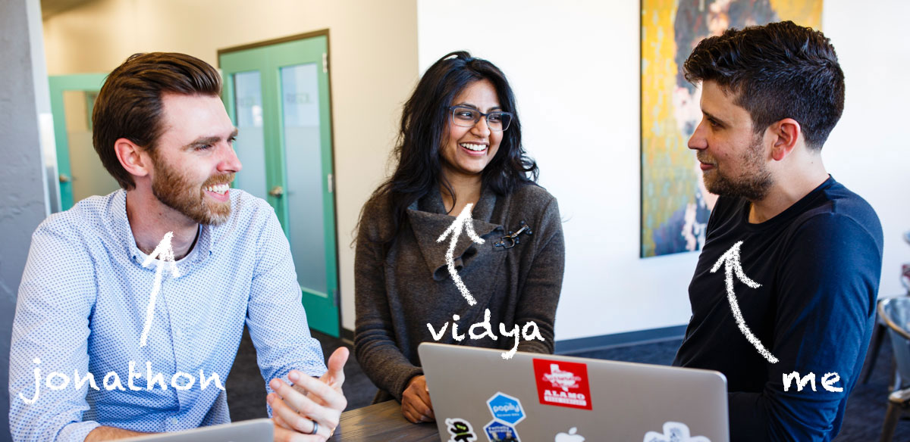
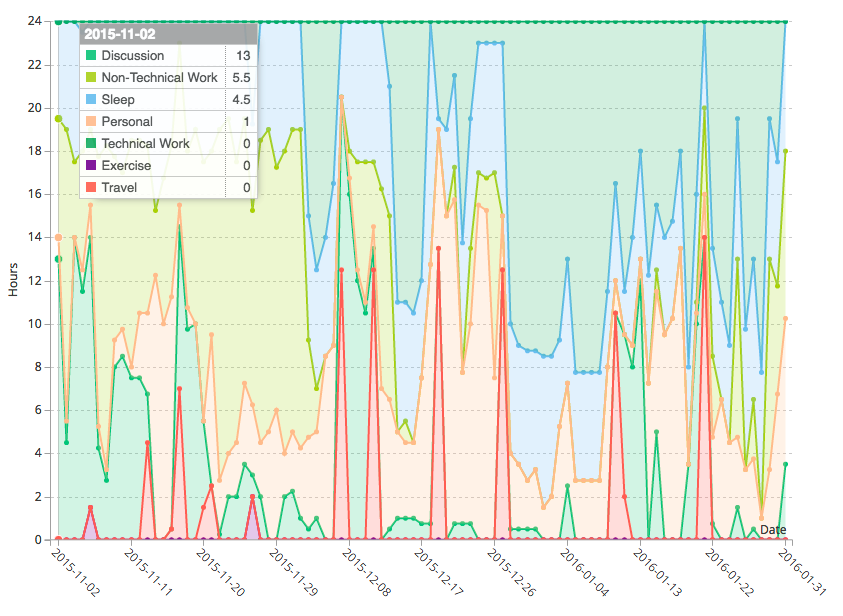
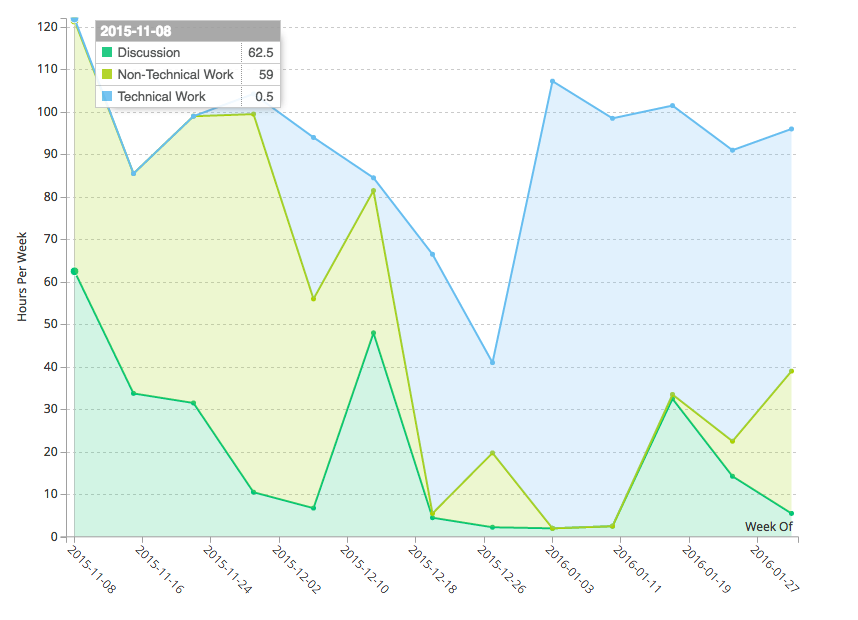
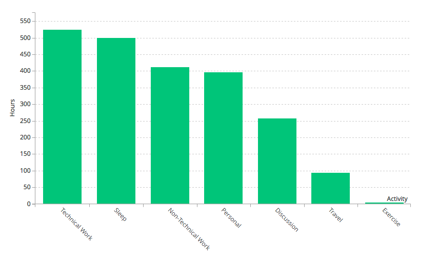
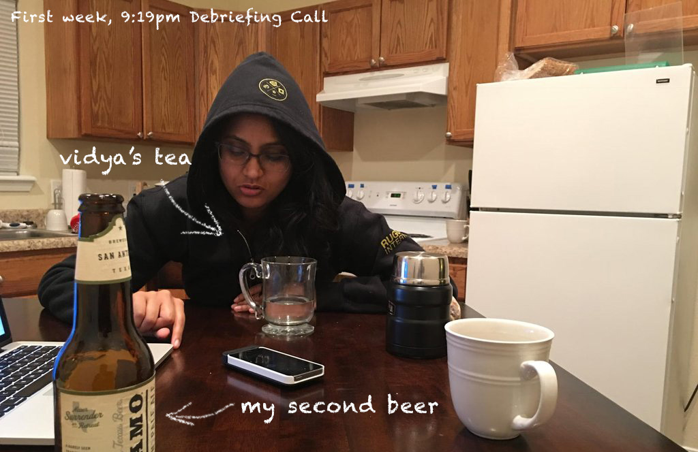
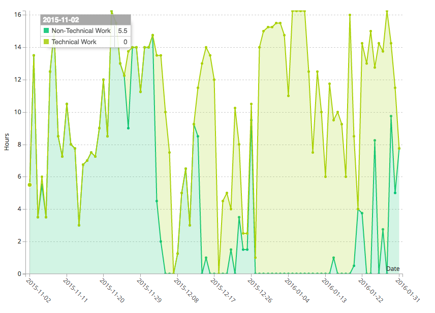
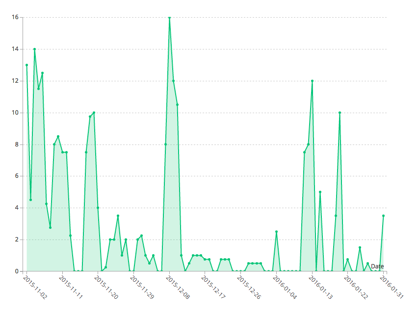
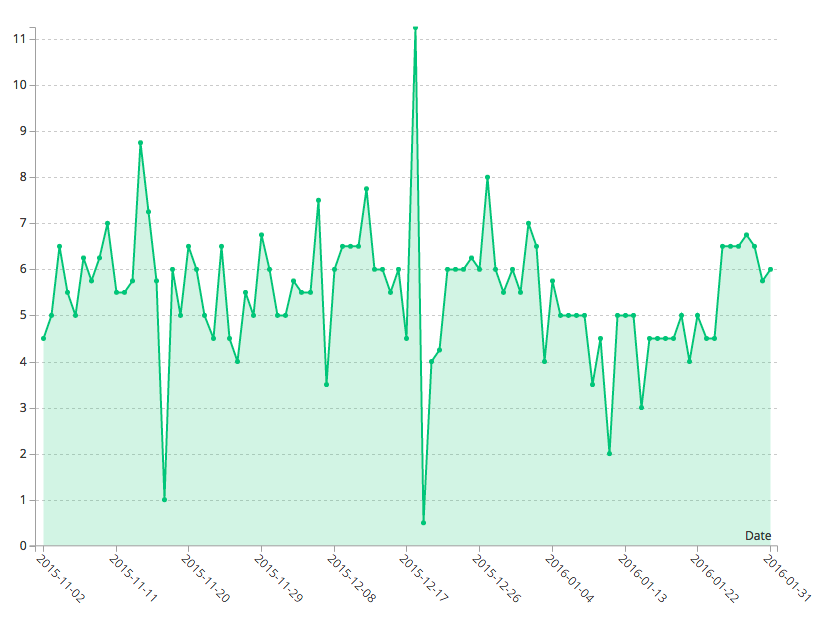
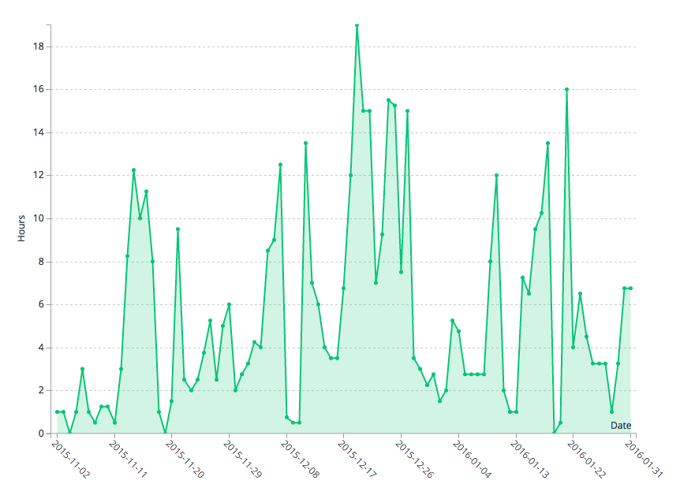
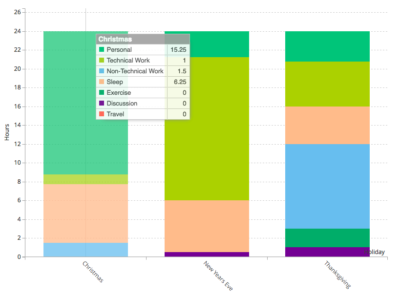

What I Learned Tracking My Time At Techstars

In the fall of 2015, New Knowledge, a company I cofounded with two friends was offered a slot in the 2016 class of Techstars Cloud. Like most people in tech, I had heard about Techstars, but in truth I barely knew anything specific, particularly about the day-to-day of the program. Was Techstars a permanent hackathon fueled by Soylent and Adderall? Was it three months of guest speakers and sponsored happy hours? I watched Techstars’s promotional videos, but the only impression I could glean was that all the founders worked 36 hours per day while having ample spare time to ride bikes around downtown Boulder. I also found some posts about people’s experiences, but overall I was in the dark. So, when we joined Techstars Cloud in November, I did what I was trained to do: gather data.
For three months, from November 2nd, 2015 to January 31st, 2016, I tracked how I spent every 15 minutes of every day and categorized each into one of seven activities:
- Non-Technical Work: Email, writing, diagramming, project management, PivotalTracker, etc.
- Technical Work: Coding, designing, data analysis, etc.
- Discussion: Team meetings, speaking events, meeting with mentors or investors, Techstars happy hours, etc.
- Sleep
- Travel: Driving or flying (when I couldn’t do any work)
- Exercise: Running (which basically never happened)
- Personal: Time with family, cooking, hobbies, reading, housework etc.
The full data is available on GithubI hope you find it useful.

Lesson 1: Techstars Is For Going All-In
If there was one description of my time at Techstars it was that I worked, a lot – during evenings, lunches, and holidays; in offices, cars, and AirBnBs; alone, with my team, and while holding my daughter. The combination of the environment and the looming Demo Day made the work all-consuming. I was responsible for the product, so it is unsurprising that the largest number of my hours was spent on technical tasks. In truth, even non-technical tasks were almost always related to product development: UX testing, QAing, or PivotalTracker. My laser focus on the product was sometimes at odds with the myriad of guest speakers and mentor meetings that, while interesting and useful, could suck me in and stall development. As a company we started using two strategies to keep the product moving forward. First, most of the meetings and events were handled by my cofounders, which left me time to focus to a greater degree on the product. Second, when we had a product update or launch goal, I spent weeks away from the Techstars offices so I could get the most work done on the product as possible.

On average, during Techstars I worked 91.6 hours per week. I worked the most hours during the first week of the program, where I averaged 17.4 hours of work per day. This number will be unsurprising to anyone who has going though Techstars. The first three weeks of Techstars are called Mentor Madness and can essentially be described as a full day of back to back 20 minute meetings with every fancy and impressive founder you can imagine. You walk into a room, give a five minute pitch to anyone from the CEO of a boutique ad agency to a founder of a technology giant and hear their take about you, your company, your product, your market, whatever. After 20 minutes you walk into the next room and repeat the entire process again.

Mentor Madness was a grueling experience for all of us, not only because it took up so much of our energy (it takes a lot of focus to be engaged after seven almost-back-to-back meetings), but more importantly it made us have to defend, explain, and face so many fundamental assumptions we implicitly and explicitly made about our company, product, and strategy. In one meeting a mentor would argue that the go-to-market strategy is flawed and 20 minutes later the next mentor is arguing that we need to change our company’s name.
Those weeks were brutal. However, it was also probably one of the most important few weeks of our company. Because at the end of all those meetings, our day would just begin; from the last meeting to late at night my cofounders and I would consider, discuss, and debate a hundred points that were brought in the day. Why did the mentor hate the pricing model? Was she right or just old-fashioned? Should we change our name? Who is our customer? All the meetings and all the challenging questions forced us to discuss things which might otherwise be assumed or left unsaid.

For those first few weeks I would get up early, spend an hour emailing, discuss some point or another about strategy or product, take meetings with mentors, discuss more over lunch, take more meetings, discuss over dinner and into the evening, shower, sleep, and start the whole thing over again. Two days during Mentor Madness contained a massive 13 and 14 hours of discussions. Those conversations alone made Techstars worthwhile.
Unsurprisingly, the week with the least work was Christmas when I was traveling with my family and would only be able to sneak in a few hours of work per day after everyone fell asleep.
Lesson 2: The Start Of Techstars Is About Strategy, The End Is About Execution
Our company was not alone is spending the first weeks of the program focusing on planning and strategy. I think most of the companies in our class spent the first few weeks either going back to the drawing board or mapping out a plan ahead. However, in December, the mid-point of the program there was a general shift from planning to execution.
Looking at hours spent on between technical and non-technical tasks, Techstars could be divided into two periods, before Christmas and after Christmas. In the first half of the program it felt like I spent every moment I wasn’t in meetings writing, updating, or managing user stories. We had a few contract developers and I agonized over the ordering of user stories in PivotalTracker as to maximize the value we would get from every hour of their time. However, during the second half of the problem the planning took a back seat to building.

Between Christmas and our launch on January 19th was probably my happiest in the program, because it was a wonderful coding crunchtime. I would get up, select the next user story in the queue, complete it, QA, and repeat. It was – frankly – just fun. All the discussions around marketing, fundraising, or ten thousand other things were put aside (i.e. handled by my cofounders), leaving me free to build.
This switch from planning to building is beautifully seen in the data: in the first half of the program I spent almost all my time on planning and strategy and in the second half I spent almost all my time building.
While non-technical and technical work peaked around the beginning and the end of the program, meetings, networking, and discussions continued throughout. As I said previously, the Mentor Madness of the first three weeks took up a massive amount of time at the start of the program, but after those weeks my cofounders and I actively tried to give each other the space to get stuff done. Our primary tactic was to have regular short(ish) “State Of The Union calls almost every day, leaving the major discussions to multi-day planning sessions every few weeks. These discussion can be easily seen as peaks in the chart below. This system might not work well for everyone, but it gave us the right balance of time to work out problems and time to get shit done.

Did all those hours matter? Completely and absolutely. Over the course of the program the product went from a tricycle to a Harley Davidson. There is more to do, but the leaps and bounds made during Techstars has been incredible.
Lesson 3: Sleep Is Important! Kinda.
As soon as I started tracking my time, I knew the first question everyone was going to ask: “how much did you sleep?” and because of the power of data I can give you a real answer: 5.5 hours of sleep per night. I will admit I was pretty pleased when I saw that number because while everyone at Techstars works their asses off 4.5 to 6.5 hours of sleep was my normal amount prior to Techstars. That said, on those few nights I received far less sleep than I needed my productivity suffered the next day.
Looking at the data below, it is also notable to see that the amount of sleep I got every night remained relatively stable throughout the program. The only two deviations are the two times I made the twelve hour drive from my house to the Techstars offices overnight and the moderate dip in sleep I got in early January when I was enjoying my late night coding sessions.

Lesson 4: There Is No Work-Life Balance
I would love to say there was great work-life balance, but in reality was not any sort of work-life balance. There was regular fun events (e.g. happy hours, runs, etc.) during the program, but that isn’t work-life balance, that is fun work events.
The truth is that all the benefits of Techstars, the rapid advance of our product, the boost in users, the improved strategy, and everything else came at a price – that for three months you lived your work and everything else from family to kids to friends took a backseat. During Techstars my average daily “free time” (i.e. not working or sleeping) was 2.7 hours. That is 2.7 hours per day for everything, from Christmas mornings to birthday parties to doctors appointments to cooking dinner.
I am not complaining. I like working, and I am in a place in my life that I can let work take over for a while, but make no mistake: it did take over. I’d argue that to really get value from Techstars, it probably has to take over.

As a more concrete example to the point above, of the three major holidays that took place during Techstars Cloud two of them were just a regular work day for me.

Final Thoughts On Techstars
It has been incredibly valuable to every aspect of New Knowledge, from product to strategy. The advice been useful, the connections have been valuable, and Demo Day (February 11th) will be awesome. However, at the end of the day none of that was why I enjoyed Techstars.
The real reason is that for three months I worked with people I enjoy for long hours on hard problems – and everything else took a back seat. That might not appeal to many people, but it appeals to me. In truth, not once during Techstars did I feel like I was “working”. Rather, I was with my friends, trying to do something genuinely hard – and I can’t ask for more than that.